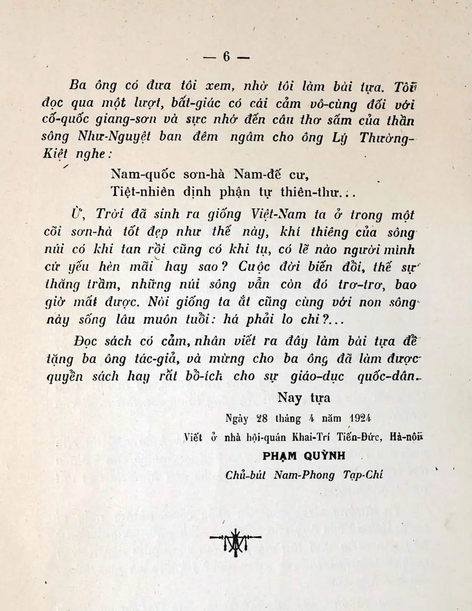
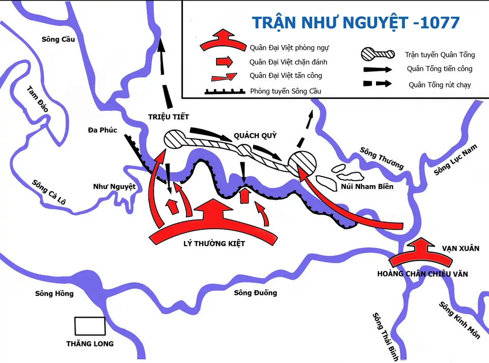
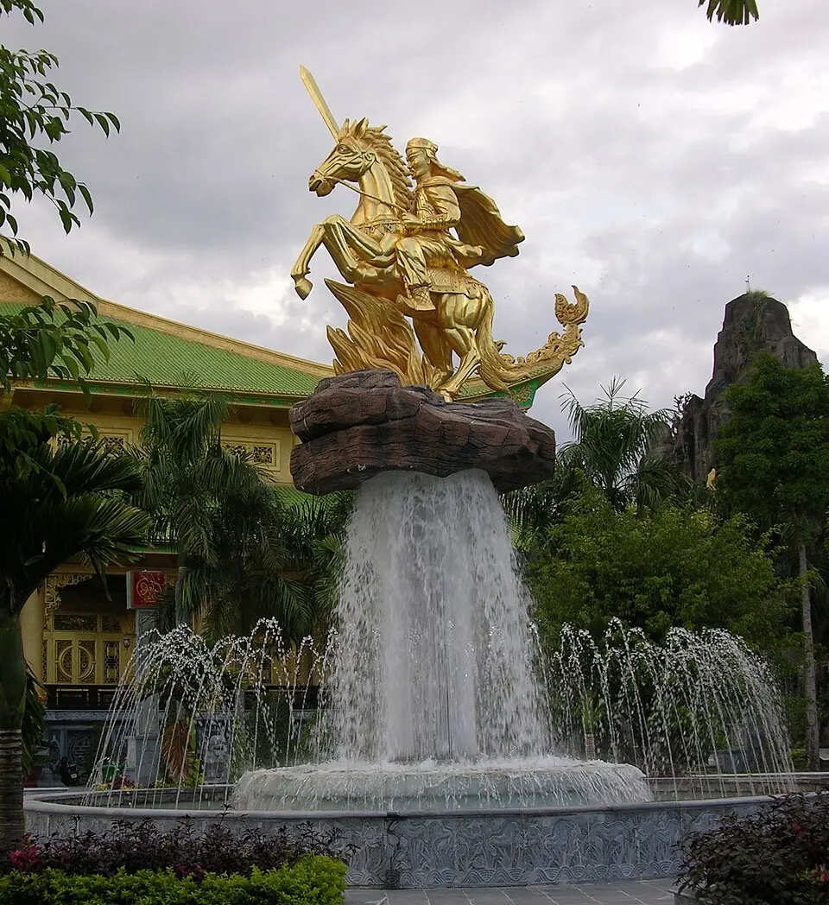

Ai thật sự viết "Nam quốc sơn hà"?
Bài thơ bốn câu được gọi là bản tuyên ngôn độc lập đầu tiên của Việt Nam không có tên tác giả, không có tên bài, và có ít nhất 35 dị bản.

Mùa xuân năm 1077, hai đạo quân đối mặt nhau qua sông Như Nguyệt, khúc sông Cầu ở Bắc Ninh ngày nay. Bờ bắc là khoảng 10 vạn quân Tống của Quách Quỳ và Triệu Tiết. Bờ nam là chiến lũy đất đóng tre nhiều tầng của Lý Thường Kiệt. Theo Đại Việt sử ký toàn thư, một đêm quân sĩ nghe trong đền thờ Trương tướng quân bên sông có tiếng đọc to bốn câu thơ. Bốn câu ấy nay ai cũng thuộc, nhưng ai viết ra chúng thì đến giờ vẫn chưa có lời đáp.
Bốn câu ấy nay ai cũng thuộc, nhưng ai viết ra chúng thì đến giờ vẫn chưa có lời đáp.
Bốn câu thơ trong chính sử
Bản trong Toàn thư, cũng là bản được biết nhiều nhất, viết: "Nam quốc sơn hà Nam đế cư / Tiệt nhiên định phận tại thiên thư / Như hà nghịch lỗ lai xâm phạm / Nhữ đẳng hành khan thủ bại hư". Bản dịch dễ nhớ nhất là của Trần Trọng Kim: "Sông núi nước Nam vua Nam ở / Rành rành định phận ở sách trời / Cớ sao lũ giặc sang xâm phạm / Chúng bay sẽ bị đánh tơi bời".
Toàn thư là bộ chính sử đầu tiên chép bài thơ, nhưng không phải sách đầu tiên, và cũng ra đời muộn: Ngô Sĩ Liên hoàn thành bộ sử năm 1479, hơn 400 năm sau trận Như Nguyệt. Thư tịch sớm nhất có bài thơ là Việt điện u linh tập, sách chép truyện các vị thần. Ở đó bài thơ gắn với hai anh em Trương Hống, Trương Hát, tướng cũ của Triệu Việt Vương, được thờ làm thần sông. Thời Lý Nhân Tông, khi Thái úy Lý Thường Kiệt đóng cừ giữ bờ sông, quân sĩ nghe tiếng ngâm thơ trong đền, và theo sách kể, quân Tống chưa đánh đã tan.
Trận chiến phía sau bài thơ


Cuộc chiến bắt đầu từ năm 1075. Theo vi.wikipedia tổng hợp từ sử liệu, Tể tướng Vương An Thạch tâu với vua Tống rằng Đại Việt vừa bị Chiêm Thành đánh, quân còn chưa đầy vạn người, có thể chiếm được. Nhà Tống bí mật luyện thủy quân và cấm buôn bán với Đại Việt. Lý Thường Kiệt đánh trước: ngày 30 tháng 12 năm 1075 quân Đại Việt chiếm Khâm Châu, ba ngày sau chiếm Liêm Châu. Thành Ung Châu cầm cự hơn 40 ngày; đến ngày thứ 42 thành vỡ, tri châu Tô Giám tự thiêu.
Tháng 3 năm 1076, nhà Tống cử Quách Quỳ làm Chiêu thảo sứ, Triệu Tiết làm phó, đem khoảng 10 vạn quân, một vạn ngựa và 20 vạn dân phu sang đánh. Thủy quân Tống bị chặn ngoài biển. Quân bộ hai lần cố vượt sông Như Nguyệt và hai lần bị đẩy lui. Kẹt lại bên bờ bắc, quân Tống thiếu lương và bị bệnh. Lý Thường Kiệt chủ động đề nghị giảng hòa, và Quách Quỳ rút quân.
Sử sách chép gì


Văn bản thì có rất nhiều. Theo thống kê được dẫn trên vi.wikipedia, bài thơ có ít nhất 35 dị bản trong sách và 8 dị bản trong thần tích, gồm 8 bản Việt điện u linh, 10 bản Lĩnh Nam chích quái, cùng thần phả đền sông Ngũ Huyện và một tấm biển khắc ở Phù Khê Đông, Bắc Ninh.
Bối cảnh thì có hai. Sách Lĩnh Nam chích quái gắn bài thơ với năm 981, khi vua Lê Đại Hành chống quân Tống của Hầu Nhân Bảo: vua mộng thấy hai vị thần xin giúp, và thần đọc thơ trên không trung. Toàn thư thì gắn nó với Lý Thường Kiệt năm 1076 đến 1077. Các nhà nghiên cứu gần đây thường cho rằng bài thơ xuất hiện từ thời Lê Đại Hành rồi được Lý Thường Kiệt dùng lại.
Tác giả thì không có. Đa số nhà nghiên cứu để khuyết danh. Riêng Lê Mạnh Thát cho rằng tác giả là thiền sư Đỗ Pháp Thuận. Một cuốn sách xuất bản năm 2003 lại kể rằng Lý Thường Kiệt cho người vào đền giả làm thần đọc thơ. Đó là cách giải thích về sau, các nguồn cổ không chép như vậy.
Chi tiết bên lề: một cái tên đặt năm 1976
Bài thơ vốn không có tên. Cái tên "Nam quốc sơn hà" do nhóm biên soạn sách Hợp tuyển thơ văn Việt Nam, tập 2, Nhà xuất bản Văn học, đặt năm 1976, lấy bốn chữ đầu câu thứ nhất. Ngay câu cuối cũng có cách hiểu khác: theo Nguyễn Hùng Vĩ và Nguyễn Sơn Phong, "nhữ đẳng" (các ngươi) có thể chỉ chính quân Đại Việt, tức là một câu trách hỏi vì sao giặc đến mà các ngươi lại cam chịu thua, chứ không phải lời đe dọa quân Tống.
Dư âm đến hôm nay
Sách Lịch sử Việt Nam, tập I, do Ủy ban Khoa học Xã hội biên soạn năm 1971, gọi bài thơ là "bản Tuyên ngôn độc lập đầu tiên" của dân tộc, và cách gọi ấy đi vào nhiều sách sau đó. Bản dịch của Trần Trọng Kim từng có trong sách giáo khoa rồi bị thay. Sách Ngữ văn 7 xuất bản năm 2003 dùng bản dịch của Lê Thước và Nam Trân, nhưng tự sửa câu đầu từ "Núi sông Nam Việt vua Nam ở" thành "Sông núi nước Nam vua Nam ở". Việc sửa này từng bị một nhà nghiên cứu Hán Nôm phê bình là dẫn không đúng nguyên văn.
Bài thơ có thật, và chiến thắng Như Nguyệt có thật. Người viết ra nó, và đêm đầu tiên nó được đọc lên, vẫn thuộc về truyền thuyết.